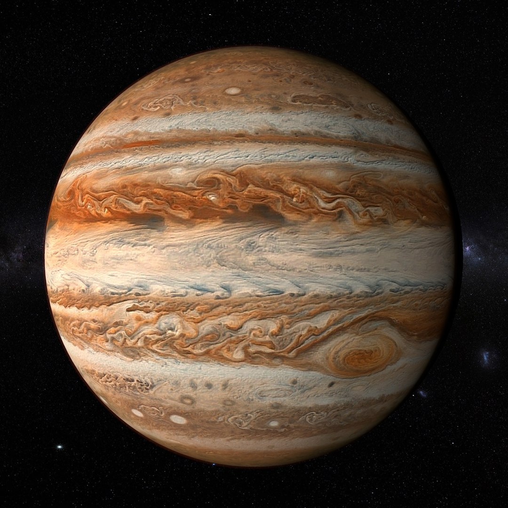

Fast facts about Jupiter
- Jupiter is the fifth planet from the Sun.
- It is the largest planet in the Solar System.
- It is a gas giant made mainly of hydrogen and helium.
- Jupiter has many moons, including Europa, Io, Ganymede and Callisto.
Mini quiz
Space video
Watch the latest official NASA Artemis video on the source page.
Learning Sources
More information: Wikipedia: Jupiter | NASA: Jupiter